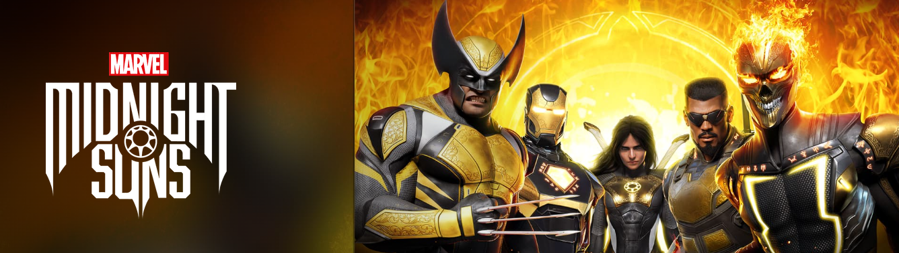

OVERVIEW A new tactical RPG set in the darker side of the Marvel Universe, 'Marvel's Midnight Suns' brings players face-to-face against supernatural forces as they team up with and live among the Midnight Suns, Earth’s last line of defense against the underworld.
DEVELOPERS Firaxis Games & 2K
PLATFORMS PlayStation®5, PlayStation®4, Xbox Series X|S, Xbox One, Nintendo™ Switch, and Windows PC via Steam and Epic Games Store
RELEASE DATE December 2, 2022